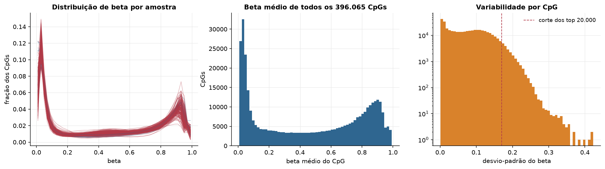
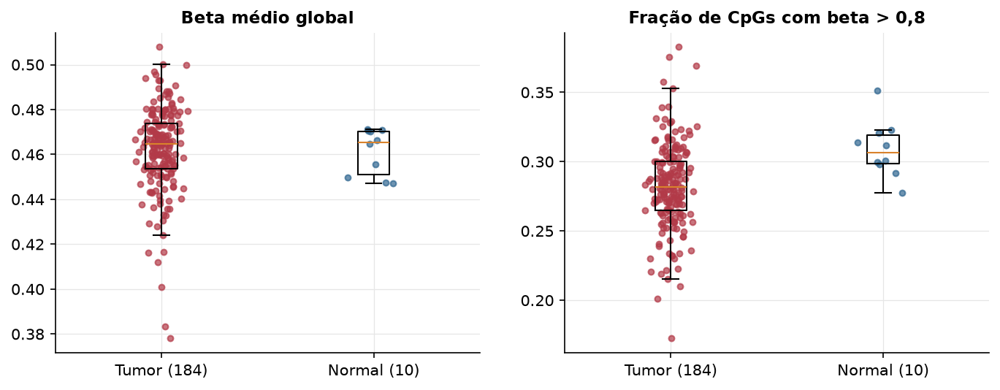
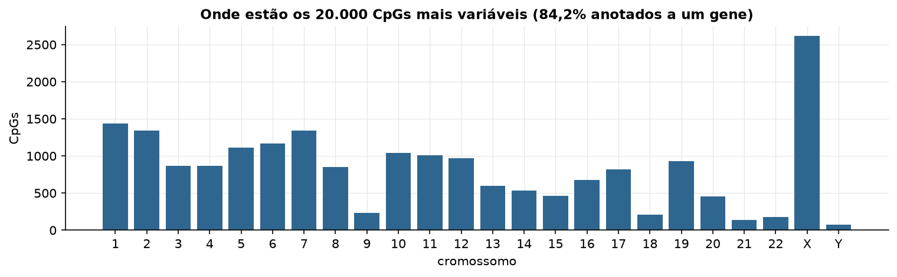
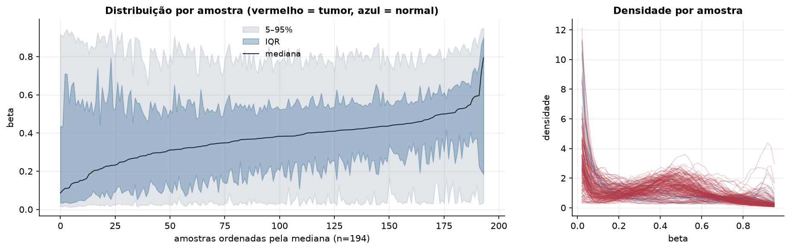
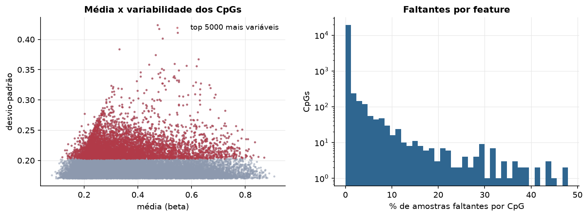
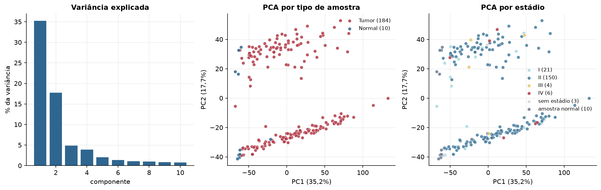
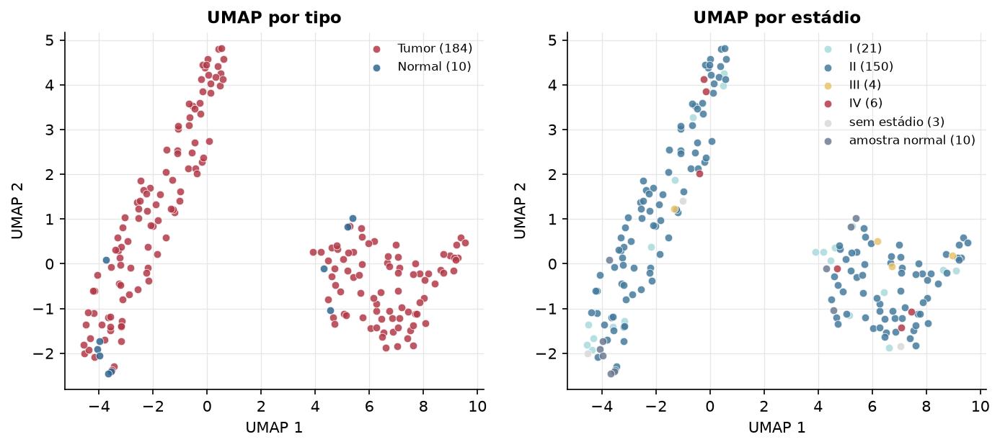
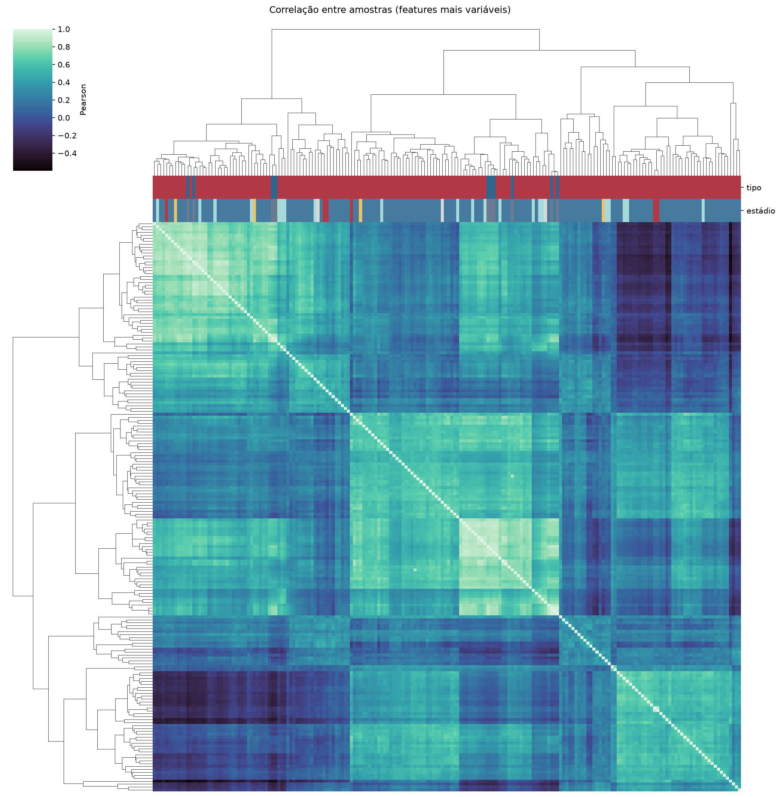
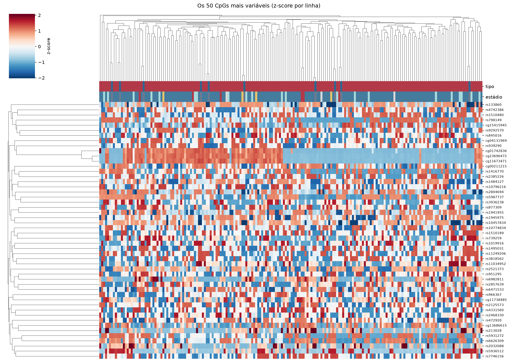
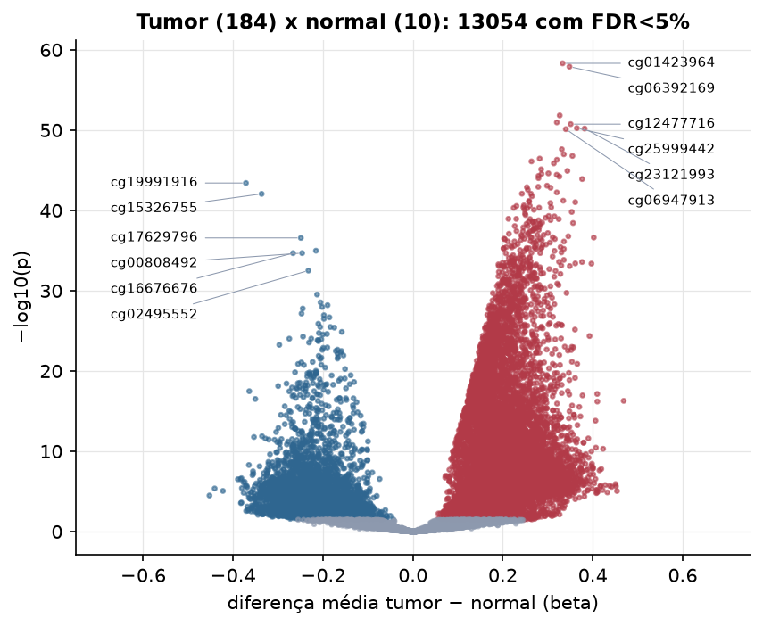

PAAD · Metilação do DNA (450k)
Illumina Infinium HumanMethylation450, valores beta (0 a 1) · gerado em 22/10/2026 02:40
396.065CpGs medidos
374.103CpGs sem faltante
20.000CpGs
184amostras tumorais
10amostras normais
0,3%valores faltantes
Fonte: PanCanAtlas HM450 via API do Xena
O array tem ~485 mil CpGs. Para não ocupar espaço, guardamos estatísticas de todos os CpGs e só os 20.000 mais variáveis para PCA, UMAP e heatmaps.
Principais resultados
- A distribuição de beta é bimodal: a maioria dos CpGs está quase toda desmetilada (perto de 0, típico de ilhas CpG em promotores) ou quase toda metilada (perto de 1, corpo gênico e regiões intergênicas). 39,0% dos CpGs têm beta médio intermediário (0,2 a 0,8).
- Beta médio global: 0,465 nos tumores e 0,465 nos normais (hipometilação global no tumor, como é comum em câncer).
- 20.000 CpGs medidos em 194 amostras (184 tumorais e 10 normais); 0,3% dos valores estão faltando.
- Os dois primeiros componentes principais explicam 35,2% e 17,7% da variância das features mais variáveis.
- Correlação mediana entre amostras: 0,32.
- Tumor x normal: 13054 CpGs diferentes com FDR < 5% (9677 maiores no tumor, 3377 maiores no normal; 10 pacientes têm o par tumor-normal).
- Mais aumentados no tumor: cg01423964, cg06392169, cg08893692, cg18485844, cg12477716, cg25999442, cg23121993, cg06947913.
- Mais reduzidos no tumor: cg19991916, cg15326755, cg17629796, cg26532812, cg00808492, cg16676676, cg02495552, cg26337559.
- Associações clínicas com p < 0,05 nos componentes principais: PC3 com estádio (p=0.0022); PC1 com sexo (p=0.00028); PC2 com sexo (p=7.9e-31); PC1 com idade (p=0.048); PC1 com sobrevida (p=0.034); PC2 com sobrevida (p=0.036).
Distribuição global



Exploração dos CpGs mais variáveis
Distribuição dos valores


Estrutura das amostras




Tumor x normal

Features mais diferentes entre tumor e normal
| diferenca_tumor_menos_normal | t | p | fdr | |
|---|---|---|---|---|
| cg01423964 | 0.333 | 23.939 | 4.76e-59 | 9.52e-55 |
| cg06392169 | 0.348 | 23.594 | 1.23e-58 | 1.23e-54 |
| cg08893692 | 0.326 | 21.338 | 1.47e-52 | 9.78e-49 |
| cg18485844 | 0.32 | 21.053 | 1.09e-51 | 5.47e-48 |
| cg12477716 | 0.351 | 20.961 | 1.79e-51 | 7.15e-48 |
| cg25999442 | 0.365 | 21.778 | 5.66e-51 | 1.82e-47 |
| cg23121993 | 0.382 | 21.002 | 6.38e-51 | 1.82e-47 |
| cg06947913 | 0.34 | 20.786 | 7.54e-51 | 1.89e-47 |
| cg18579862 | 0.331 | 19.876 | 2.42e-48 | 5.38e-45 |
| cg01642521 | 0.336 | 20.448 | 1e-47 | 2.01e-44 |
| cg07882671 | 0.355 | 19.722 | 1.61e-47 | 2.93e-44 |
| cg18009496 | 0.282 | 19.439 | 3.48e-47 | 5.8e-44 |
| cg24680586 | 0.32 | 19.411 | 4.85e-47 | 7.45e-44 |
| cg00505277 | 0.264 | 19.863 | 7.8e-47 | 1.11e-43 |
| cg18705773 | 0.313 | 20.269 | 1.37e-46 | 1.82e-43 |
| cg22346124 | 0.285 | 18.957 | 7.56e-46 | 9.45e-43 |
| cg02511231 | 0.344 | 19.118 | 1.19e-45 | 1.41e-42 |
| cg01638592 | 0.301 | 18.86 | 2.44e-45 | 2.71e-42 |
| cg15607538 | 0.286 | 18.771 | 2.83e-45 | 2.98e-42 |
| cg12824796 | 0.32 | 18.718 | 3.63e-45 | 3.63e-42 |
| cg25875213 | 0.279 | 18.731 | 5.02e-45 | 4.78e-42 |
| cg24403845 | 0.326 | 18.66 | 6.05e-45 | 5.5e-42 |
| cg05471296 | 0.279 | 19.05 | 9.64e-45 | 8.38e-42 |
| cg10903903 | 0.376 | 18.728 | 1.25e-44 | 1.04e-41 |
| cg19991916 | -0.372 | -18.414 | 3.85e-44 | 3.08e-41 |
| cg01614020 | 0.298 | 19.606 | 8.32e-44 | 6.4e-41 |
| cg15565065 | 0.279 | 18.382 | 1.16e-43 | 8.63e-41 |
| cg16887264 | 0.253 | 18.379 | 1.3e-43 | 9.26e-41 |
| cg12505170 | 0.306 | 18.94 | 1.49e-43 | 1.03e-40 |
| cg04293733 | 0.256 | 18.088 | 2.71e-43 | 1.8e-40 |
Associação com variáveis clínicas
p-valores da associação dos três primeiros componentes principais (só tumores) com estádio (Kruskal-Wallis), sexo (Mann-Whitney), idade (Spearman) e sobrevida global (Cox univariado).
| estádio (Kruskal) | sexo (Mann-Whitney) | idade (Spearman) | sobrevida OS (Cox) | |
|---|---|---|---|---|
| PC1 (33,9%) | 0.115 | 0.000283 | 0.048 | 0.034 |
| PC2 (17,5%) | 0.37 | 7.87e-31 | 0.772 | 0.036 |
| PC3 (4,8%) | 0.002 | 0.305 | 0.483 | 0.015 |